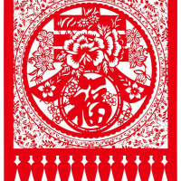
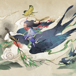
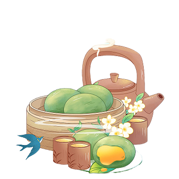
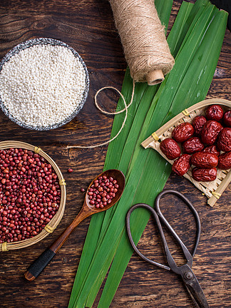
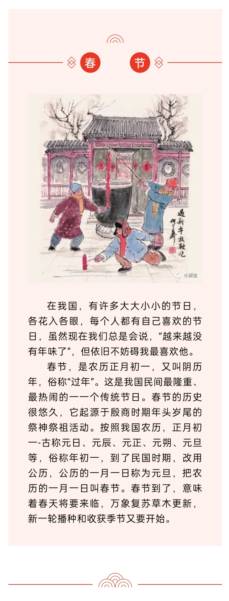
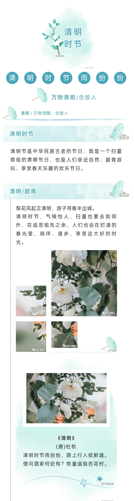

《春节》
春节，即中国农历新年，俗称新春、新岁、岁旦等，口头上又称过年、过大年。

《清明节》
清明节，又称踏青节、行清节、三月节、祭祖节等，节期在仲春 与暮春之交。

《端午节》
端午节 源于自然天象崇拜，由上古时代祭龙演变而来。
《中秋节》
中秋节，又称祭月节、月娘 节、月亮节、团圆节等，是中国民间的传统节日。





页面设计
资源
关于我们
查看更多详情情关注传统文化节日官网